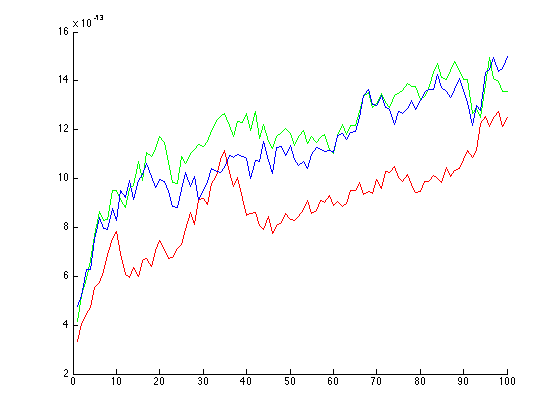
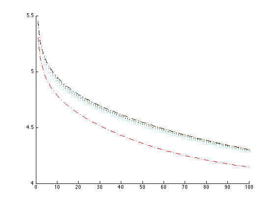
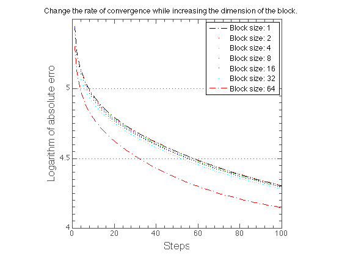

An example wich demonstrate some interesting things for Block Kaczmarz algorithm.
This code contains materials for unpublished paper: "Block Kaczmarz algorithm based on solving linear systems with arrowhead matrices" Ivanov Andrey Aleksandrovich, Zhdanov Aleksandr Ivanovich. Pending for publishing: July 2015.
Contents
- Author
- Abstract
- Generate standardized matrix and righthand vector for our test
- The solution for the identity dimension block
- See more for Regularization Tools dependency
- See more for AIRTools dependency
- Comparison with known implementation
- Direct checking the theorem about equivalence
- Comparison of the solution accuracy
- Example solution for the other block dimensions
- Making Pretty Graphs
Author
Ivanov Andrey, Candidate of Physico-Mathematical Sciences, ssauivanov@gmail.com.
Dept. of Applied Mathematics, S. P. Korolyov Samara State Aerospace University (National Research University), Faculty of Computer Science, Samara, Russia
Abstract
Block Kaczmarz algorithm implementation related with the solution of least squares for underdetermined system of linear algebraic equations. Implementation of the block algorithm related to underdetermined linear systems solving. Each iteration in the proposed algorithm is considered as a solution of sub-system defined by a specific arrowhead matrix. This sub-system is solved in effective way using direct projection method.
clear all;
Generate standardized matrix and righthand vector for our test
rng(130988); m = 128; n = 128; A = (rand(m,n)-0.5); for i = 1:1:m A(i,:) = (A(i,:)./norm(A(i,:))); end; x = (1:1:n)'; f = A*x; maxit = 100; options0.stoprule.type = 'NO';
The solution for the identity dimension block
[X0 info] = pblockkaczmarz(A,f,1,1:1:maxit,[],options0);
See more for Regularization Tools dependency
- P.C. Hansen, Regularization Tools Version 4.1 (for MATLAB Version 7.3), http://www2.imm.dtu.dk/~pcha/Regutools/
addpath ('../../libs/regu/');
See more for AIRTools dependency
- P.C. Hansen, A MATLAB Package of Algebraic Iterative Reconstruction Methods (for Matlab Version 7.8 or later), http://www2.imm.dtu.dk/~pcha/AIRtools/
addpath ('../../libs/AIRtools/AIRtools/');
Comparison with known implementation
options1.lambda = 1; [X1 info0] = kaczmarz(A,f,1:1:maxit,[],options1);
Direct checking the theorem about equivalence
X2 = zeros(n,maxit); v = zeros(n+1,1); S = eye(n+1,n+1); I = eye(n,n); zer = 0; for i = 1:1:maxit for j = 1:1:m left = [v(1:n);f(j)]; S = [I A(j,:)'; A(j,:) zer]; % this is a arrowhead matrix v = linsolve(S,left); end; X2(:,i)=v(1:n,1); end;
Comparison of the solution accuracy
errors = zeros(3,maxit); for i = 1:1:maxit errors(1,i) = norm(X0(:,i)-X1(:,i)); errors(2,i) = norm(X0(:,i)-X2(:,i)); errors(3,i) = norm(X2(:,i)-X1(:,i)); end; figure; hold on; plot(1:1:maxit,errors(1,:),'-r') plot(1:1:maxit,errors(2,:),'-g') plot(1:1:maxit,errors(3,:),'-b')
Example solution for the other block dimensions
[X01 info] = pblockkaczmarz(A,f,2,1:1:maxit,[],options0); [X02 info] = pblockkaczmarz(A,f,4,1:1:maxit,[],options0); [X03 info] = pblockkaczmarz(A,f,8,1:1:maxit,[],options0); [X04 info] = pblockkaczmarz(A,f,16,1:1:maxit,[],options0); [X05 info] = pblockkaczmarz(A,f,32,1:1:maxit,[],options0); [X06 info] = pblockkaczmarz(A,f,64,1:1:maxit,[],options0); errors0 = zeros(7,maxit); for i = 1:1:maxit errors0(7,i) = log10(norm(X1(:,i)-x)^2); errors0(1,i) = log10(norm(X01(:,i)-x)^2); errors0(2,i) = log10(norm(X02(:,i)-x)^2); errors0(3,i) = log10(norm(X03(:,i)-x)^2); errors0(4,i) = log10(norm(X04(:,i)-x)^2); errors0(5,i) = log10(norm(X05(:,i)-x)^2); errors0(6,i) = log10(norm(X06(:,i)-x)^2); end; figure; hold on; h1 = plot(1:1:maxit,errors0(7,:),'-.k'); h2 = plot(1:1:maxit,errors0(1,:),'.r'); h3 = plot(1:1:maxit,errors0(2,:),'.g'); h4 = plot(1:1:maxit,errors0(3,:),'.b'); h5 = plot(1:1:maxit,errors0(4,:),'.k'); h6 = plot(1:1:maxit,errors0(5,:),'.c'); h7 = plot(1:1:maxit,errors0(6,:),'-.r'); %
Making Pretty Graphs
http://blogs.mathworks.com/loren/2007/12/11/making-pretty-graphs/
hTitle = title('Change the rate of convergence while increasing the dimension of the block.'); hXLabel = xlabel('Steps'); hYLabel = ylabel('Logarithm of absolute error'); hLegend = legend('Block size: 1', ... 'Block size: 2', ... 'Block size: 4', ... 'Block size: 8', ... 'Block size: 16', ... 'Block size: 32', ... 'Block size: 64'); axis square set( gca , ... 'FontName' , 'Helvetica' ); set([hTitle, hXLabel, hYLabel], ... 'FontName' , 'Helvetica'); set([hLegend, gca] , ... 'FontSize' , 12 ); set([hXLabel, hYLabel] , ... 'FontSize' , 16 ); set( hTitle , ... 'FontSize' , 12 , ... 'FontWeight' , 'bold' ); set(gca, ... 'Box' , 'on' , ... 'TickDir' , 'in' , ... 'TickLength' , [.02 .02] , ... 'XMinorTick' , 'on' , ... 'YMinorTick' , 'on' , ... 'YGrid' , 'on' , ... 'XColor' , [.3 .3 .3], ... 'YColor' , [.3 .3 .3], ... 'YTick' , 3.5:0.5:5, ... 'LineWidth' , 1 );